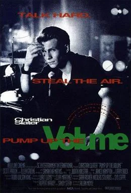

Explore film ↗Pump Up the Volume
Allan Moyle
DIRECTOR PROFILE
Allan Moyle (born 1947) is a Canadian film director, writer, and actor.
LIFE & CAREER
Allan Moyle (born 1947) is a Canadian film director, writer, and actor. He is best known for directing the films Times Square (1980), Pump Up the Volume (1990), Empire Records (1995), and New Waterford Girl (1999) .
Adapted excerpt from Wikipedia, CC BY-SA 4.0. Pronunciation notes omitted.
Read the full biographyImage: Photographer not specified on source profile. Source & rights: Copyrighted photo; no free licence stated ↗.
Profile reference: Director background ↗
Open this director checklist ↗
A selection of this director’s films available in the archive.

Explore film ↗Allan Moyle